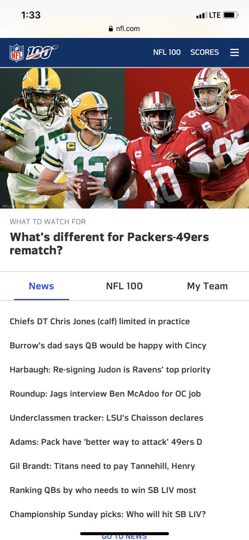
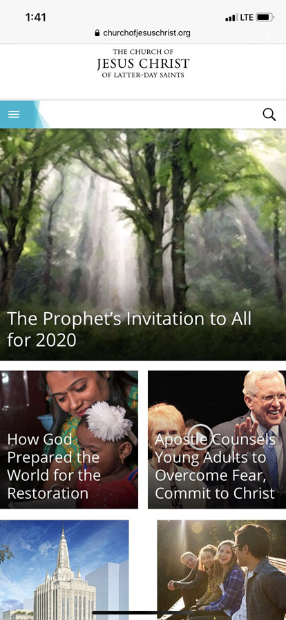

White Space
NFL
The main page of NFL.com is a good example of white space. It is a simple page, whose purpouse is to allow the user to search for and go to an other article that they may want to read. The page uses white space by not cluttering the page with other details that may distract from what a reader is looking for. The white space is clean, and everything on the page is well organized.
Alignment
Church of Jesus Christ
The website of the Chruch of Jesus Christ of Latter Day Saints uses the principle of Alignemnt very well. The images that take the reader to other pages are aligned into columms which make it easy to naviagte and see clearly what you may want to find.
Proximity
Deseret Book
Deseret Book uses the priniple of proximity by putting the highlighted items close together towards the top of the page. There is close proximity to the small buttons at the bottom that gives ideas for where a customer may want to start searching. The close proximity makes it easy to quickly access where every you may want to go.